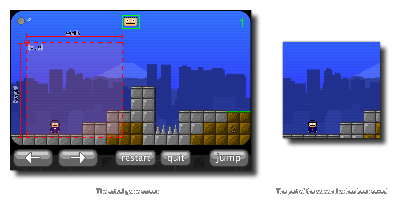

screen_save_part(fname,x,y,w,h);
| Argument | Description |
|---|---|
| fname | The filename for the screenshot to save |
| x | The x coordinate of the top left corner of the area of the screen to capture |
| y | The y coordinate of the top left corner of the area of the screen to capture |
| w | The width of the area of the screen to capture |
| h | The height of the area of the screen to capture |
Returns: N/A
With this function you can save a screenshot of a part of the
game as it currently appears in the game window or browser. The
selection coordinates are based on the absolute size of the
display, so (0,0) is always the top left hand corner of the screen.
Below is an image that shows how this function works:  The file will be saved to the
working
directory of the game.
NOTE: This function does not work on the HTML5
target.
if keyboard_check_pressed(ord("S"))
{
screen_save_part(working_directory +
"\Screens\Screen_"+string(num)+".png", 0, 0, 100, 100)
num += 1;
}
The above code takes a screenshot of a part of the game screen that is 100 pixels square when the user presses the "S" key. This screen shot is saved to a specific directory and numbered using a variable which is then incremented.